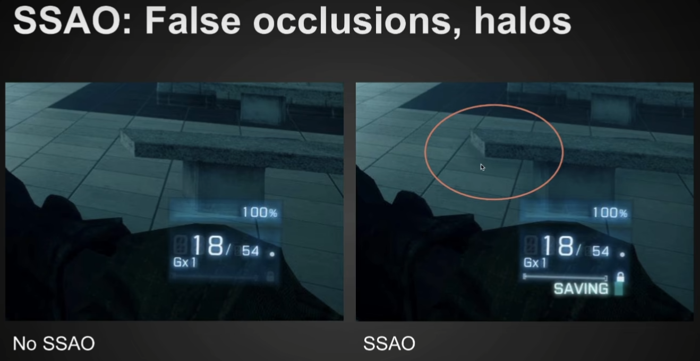
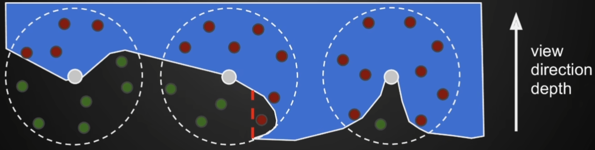
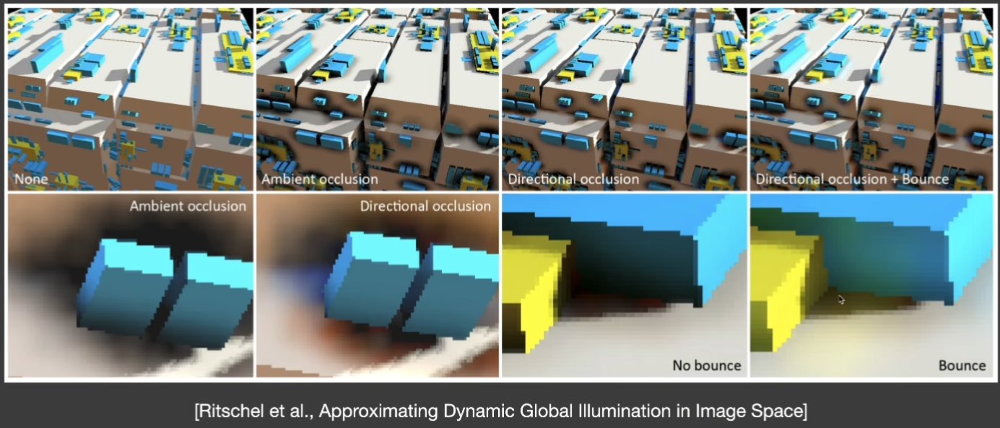
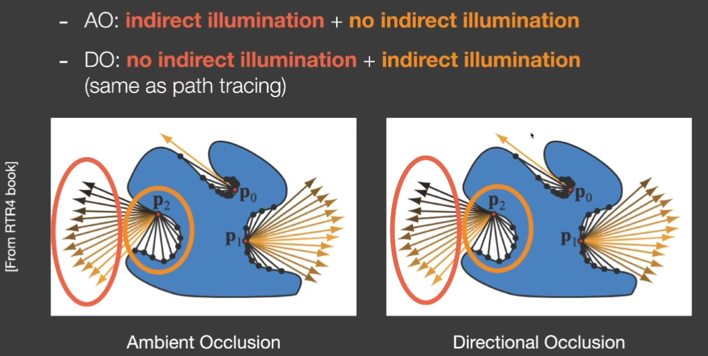
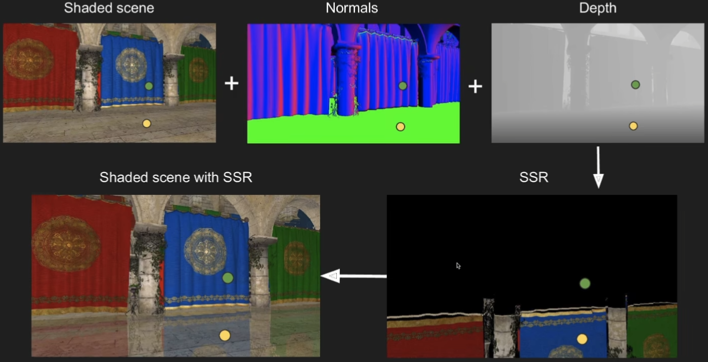
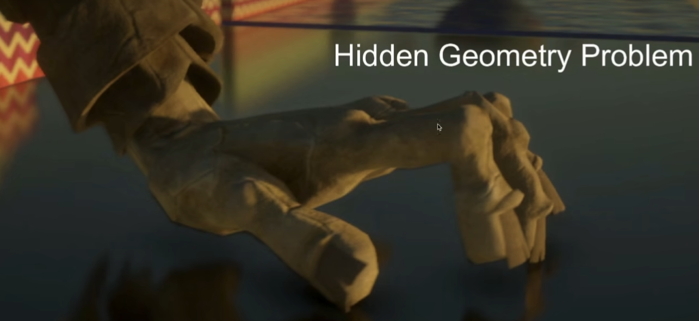
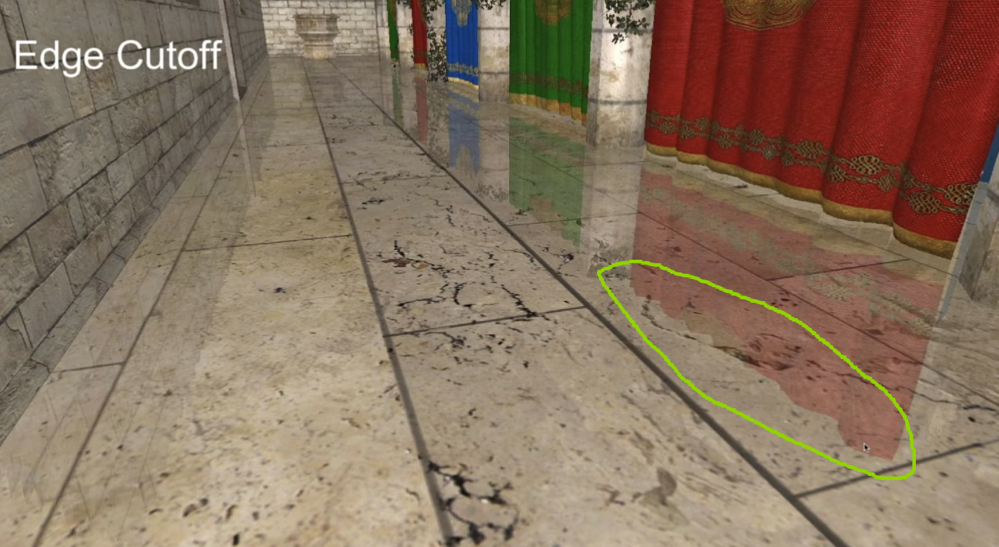
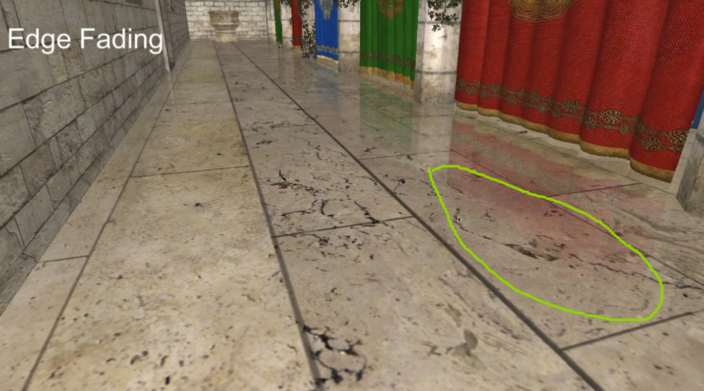

GAMES 202 - Global Illumination
What are needed to illuminate any point p with indirect illumination?
- Q1: Which surface patches are directly lit
- Shadow Mapping?
- Q2: What is the contribution from each surface patch to p
- Then sum up all the surface patches’ contributions
- Hint: each surface patch is like an area light
In 3D
Reflective Shadow Maps (RSM)
-
Q1: Which surface patches are directly lit
- Perfectly solved with a classic shadow map
- Each pixel on the shadow map is a small surface patch
-
The exact outgoing radiance for each pixel is known, but only for the direction to the camera
-
Assumption
- Any reflector is diffuse
- Therefore, outgoing radiance is uniform toward all directions
-
Q2: What is the contribution from each surface patch to p
- An integration over the solid angle covered by the patch
- Can be converted to the integration on the area of the patch
-
Not all pixels in the RSM can contribute
- Visibility (still, difficult to deal with)
- Orientation
- Distance
-
What is needed to record in an RSM?
- Depth, world coordinate, normal, flux, etc.
-
Often used for flashlights in video games
- Gears of War 4, Uncharted 4, The Last of US, etc.
-
Pros and Cons
- Pros:
- Easy to implement (similar to shadow mapping, only two passes needed)
- Cons
- Performance scales linearly with #lights
- No visibility check for indirect illumination
- Many assumptions: diffuse reflectors, depth as distance, etc.
- Sampling rate / quality tradeoff
- Pros:
-
RSM is like the virtual point light (VPL) in off-line rendering.
Light Propagation Volumes (LPV)
-
Key problem
- Query the radiance from anydirection at any shading point
-
Key idea
- Radiance travels in a straight line and does not change
-
Key solution
- Use a 3D grid to propagate radiance from directly illuminated surfaces to anywhere else
-
Process
-
Step 1: Generation
-
This is to find directly lit surfaces (these are secondary light sources)
- Simply applying RSM would suffice!
-
May use a reduced set of diffuse surface patches (virtual light sources)
-
Step 2: Injection
- Pre-subdivide the scene into a 3D grid
- For each grid cell, find enclosed virtual light sources
- Sum up their directional radiance distribution
- Project to first 2 orders of SHs (4 in total)
-
Step 3: Propagation
- For each grid cell, collect the radiance received from each of its 6 faces
- Sum up, and again use SH to represent
- Repeat this propagationseveral times till the volumebecomes stable
-
Step 4: Rendering
-
For any shading point, find the grid cell it is located in
-
Grab the incident radiance in the grid cell (from all directions)
-
Shade
-
Any problems?
- Hint: look at point p. The other side of the wall shouldn’t be lit by p but with LPV it can be because we don’t consider visibility in light propagation.
- This problem is called light leaking. (PS: remember VSM can also cause light leaking)
- When the grids are large there could be light leaking, but if the grids are small we will need more storage and the computation will be slower.
- Hint: look at point p. The other side of the wall shouldn’t be lit by p but with LPV it can be because we don’t consider visibility in light propagation.
-
-
Voxel Global lllumination (VXGI)
-
Still a two-pass algorithm
-
Two main differences with RSM
- Directly illuminated pixels -> hierarchical voxels (Voxelize the entire scene and build a hierarchy - think of oct tree with smaller grids)
- Sampling on RSM -> tracing reflected cones in 3D (Note the inaccuracy insampling RSM)
-
Process
- Pass 1 from the light
- Store the incident and normal distributions in each voxel
- Update on the hierarchy
- Pass 2 from the camera
- For glossy surfaces, trace 1 cone toward the reflected direction
- Query the hierarchy based on the (growing) size of the cone - how many voxels can contribute to the shading point at the starting corner of the cone
- For diffuse, trace several smaller cones (e.g., 8)

- Pass 1 from the light
-
Pretty good results, similar to ray tracing
Screen Space
post-processing on existing renderings
Screen Space Ambient Occlusion (SSAO)
- Why AO?
- Cheap to implement but enhances the sense of relative positions
- What is SSAO?
- An approximation of global illumination
- In screen space
- Key idea 1
- We don’t know the incident indirect lighting
- Let’s assume it is constant (for all shading points, from all directions)
- Key idea 2 & 3
- Considering different visibility (towards all directions) at different shading points
- Assume diffuse materials
Deriving from the rendering equation, SSAO is related to weighted visibility, and so,
-
Calculation
- In object space
- Raycasting against geometry
- Slow, requires simplifications and/or spatial datastructures
- Depends of scene complexity
- In screen space
- Done in a post-rendering pass
- No pre-processing required
- Doesn’t depend on scene complexity
- Simple
- Not physically accurate
- In object space
-
Ambient occlusion approximation limited radius
- Limit to local occlusion in a hemisphere ofradius R.
- More efficient and works better in enclosedareas such as indoors, that would be fully occluded otherwise
-
Ambient occlusion using the z-buffer
- Use the readily available depth buffer as anapproximation of the scene geometry.
- Take samples in a sphere around each pixeland test against buffer.
- If more than half of the samples are inside, AO will be applied, amount depending on ratio of samples that pass and fail depth test. Uses sphere instead of hemisphere, since normal information isn’t available at the time SSAO proposed. For each pixel, generate sample directions around the sphere. Project samples into screen space and check against the depth buffer to see if geometry blocks them. Count how many samples are occluded -> higher occlusion = darker pixel.
- Approximation of the scene geometry, some fails are incorrect. The one behind the red line for example (False occlusions). In the figure below, the floor gets false occlusion because of the bench. When we take a sphere around a point on the bench we got samples on the floor which have greater z-values, and this lead to the false result that the bench contributes to the AO of the floor.
 - Samples are not weighted by cos(theta), so not physically accurate, but looks convincing.

-
Choosing Samples
- More samples -> greater accuracy
- Many samples are needed for a good result but for performance only about 16 samples are used.
- Positions from randomized texture to avoid banding.
- Noisy result, blurred with edge preserving blur.
-
Horizon based ambient occlusion: HBAO
- Also done in screen space.
- Approximates ray-tracing the depth buffer.
- Requires that the normal is known, and only samples in a hemisphere.
Screen Space Directional Occlusion (SSDO)
- What is SSDO?
- An improvement over SSAO
- Considering more actual indirect illumination (SSAO assumes that any shading point recieves same / uniform light from all directions)
- SSDO exploits the rendered direct illumination
- Not from an RSM, but from the camera (screen space - camera rendering result)

- Not from an RSM, but from the camera (screen space - camera rendering result)
- Very similar to path tracing
- At shading point p, shoot a random ray
- If it does not hit an obstacle, direct illumination
- If it hits one, indirect illumination
- Comparison with SSAO
See the figure below, notice that the color of the text corresponds to the part marked by the same color circle. It indicates that SSAO assumes that indirect illumination comes from distant areas, so the orange part will not be lit. However, SSDO assumes indirect illumnation comes from nearby areas, and that’s why it can create color bleeding effect.
 - Quality closer to off-line rendering
- Issues
- GI in a short range
- Visibility not that accurate
- Screen space issue: missing information from unseen surfaces. See the figure below, when the yellow surface face the camera, the floor got correct indirect illumination from the yellow surface. However, when it’s rotated and the yellow surface is no longer visible in the camera, there’s no yellow illumination on the floor.
Screen Space Reflection (SSR)
- What is SSR?
- Still, one way to introduce Global lllumination in RTR
- Performing ray tracing
- But does not require 3D primitives (triangles, etc.)
- Two fundamental tasks of SSR
- Intersection: between any ray and the scene
- Shading: contribution from intersected pixels to the shading point
- Algorithm
- For each fragment
- Compute reflection ray
- Trace along ray direction (using depth buffer)
- Use color of intersection point as reflection color

- For each fragment
- Linear Raymarch
- Goal: Find intersection point
- At each step, check depth value
- Quality depends on step size
- Can be refined
- To enable hierarchical ray tracing and so skip the points that are impossible to intersect, we generate depth mipmap.
- Use min value instead of average value from the previous level
- Why depth mipmap?
- It’s an acceleration structure in 2D: very similar to the hierarchy (BVH, KD-tree) in 3D
- Enabling faster rejecting of non-intersecting in a bunch
- The min operation guarantees a conservative logic
- If a ray does not even intersect a larger node, it will never intersect any child nodes of it
- Stackless ray walk of min-Z pyramid
1
2
3
4
5
6
7mip = 0;
while (level>-1)
step through current cell;
if(above Z plane)
++level; // think of level as step size and it actually is mipmap level
if(below Z plane)
--level; - Pros and Cons
- Pros
- Fast performance for glossy and specular reflections
- Good quality
- No spikes and occlusion issues
- Cons
- Not as efficient in the diffuse case because rays will be reflected to much more directions (but it’s viable nowadays)
- Missing information outside the screen
In the figure below, there should be palm reflected, but since palm is not in the screen (we cannot see it from the camera so we are not able to reflect it)

In the first figure below, there is a clear edge in the circle. This is because the items above the curtain are not in the screen so we are not able to reflect them. One solution to this is adding attenuation to fade the edge.


- Pros